A corrugated-iron cabin on a Barossa vineyard, with no steps from the car to the bed.
For two. Nelly looks after the cabin and bakes the bread, Stan grows the grapes, and Williamstown's cafes are a 15 minute walk away.
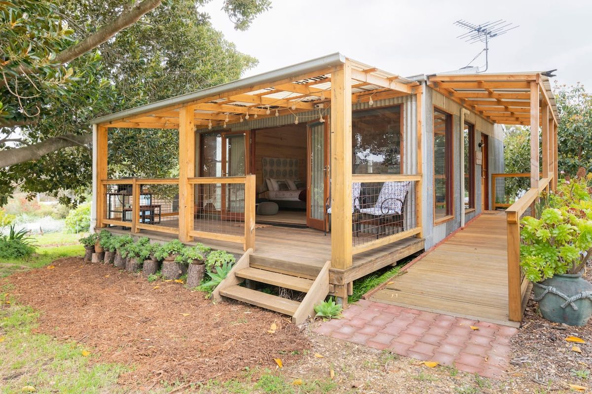
It's Bonza!Welcome! at Mill About Vineyard
Car to bed, no steps
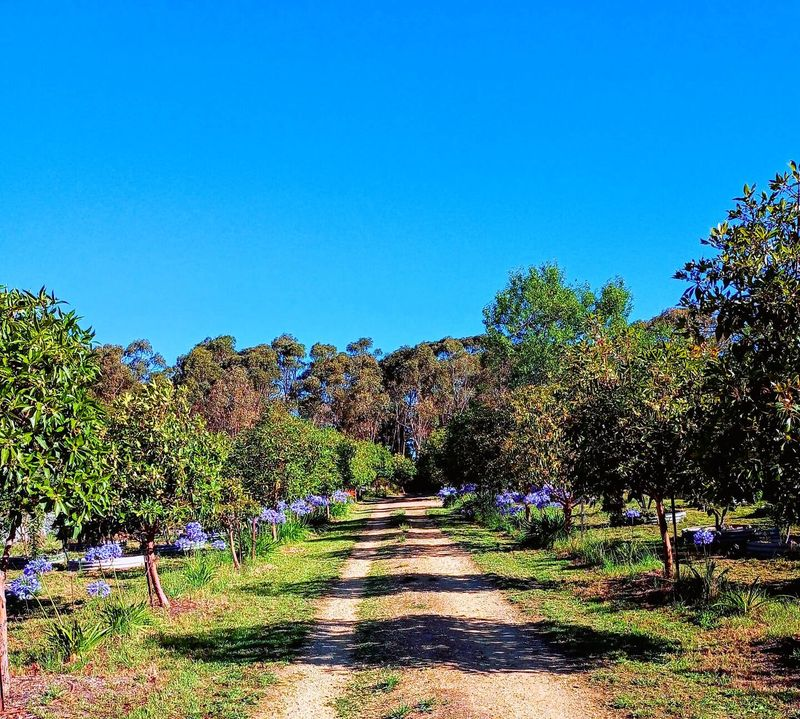
1. Park
A bay signed for wheelchairs
Park in the accessible bay. The path to the door has no steps and is lit at night.
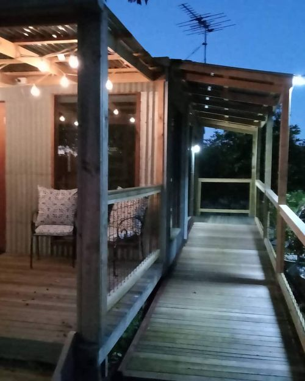
2. Ramp
Up the ramp, 1 in 14 at most
A gentle timber ramp takes you up to the porch, with lights along it after dark.
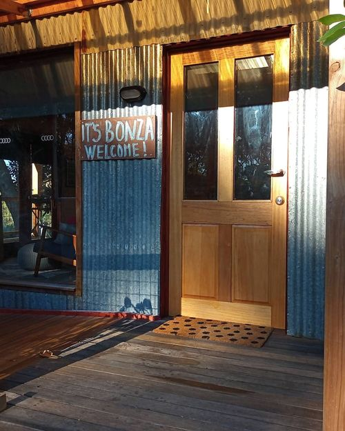
3. Door
Wide doors, lever handles
Every doorway opens to 850 mm or wider, and none of the doors is heavy.
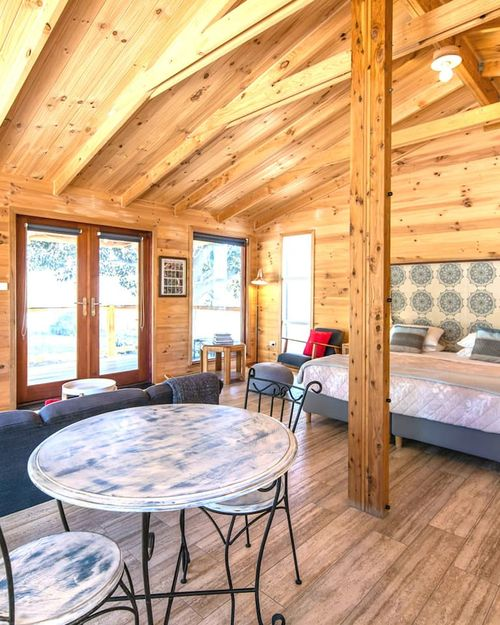
4. Bed
Room round three sides of the bed
One open room with a queen bed and enough floor for a wheelchair to turn. The floors are firm and slip resistant.
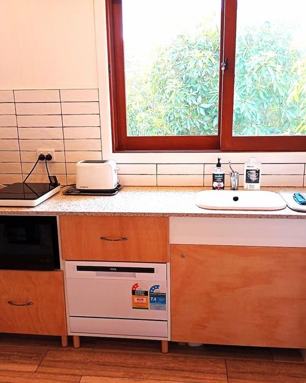
5. Kitchen
A sink you can use seated
The cabinet door under the kitchenette sink comes off, so you can roll right up to it.
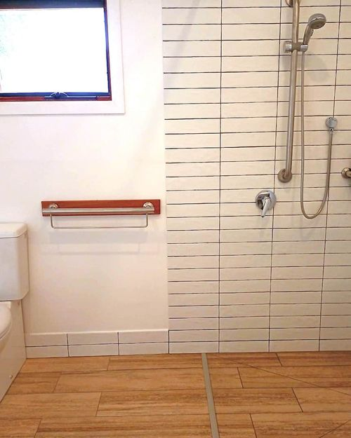
6. Shower
Step-free shower, grab rails
A handheld shower, rails in the shower and by the toilet, and a shower chair if you ask.
Plan drawn from the floorplan on their listing. Not to scale.
The cabin
Nelly and Stan built it in 2021 from reclaimed corrugated iron, in the rustic Barossa style. Inside it's honey pine, floor-to-ceiling windows and one big open room.
The deck looks out to the vines and the bush. Out the back, there are two chairs under an old Moreton Bay fig.
- Sleeps
- Two adults, in a queen bed. Babies who aren't crawling yet are welcome too.
- Kitchenette
- Induction hob, mini oven, microwave, mini fridge, dishwasher, kettle, toaster and a washing machine.
- Breakfast
- Bread, eggs, butter, olives, cereal, honey, jam, milk, coffee and tea are there when you arrive.
- Comfort
- Air conditioning, a ceiling fan, a reading corner, books, music and films.
- Outside
- A deck with a barbecue, picnic spots and walks round the farm.
- Arrive
- Self check-in with a door code.
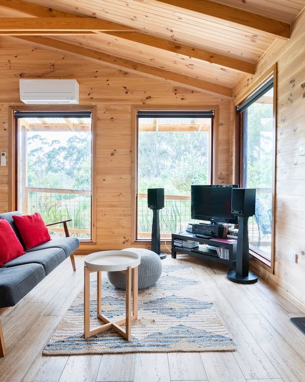
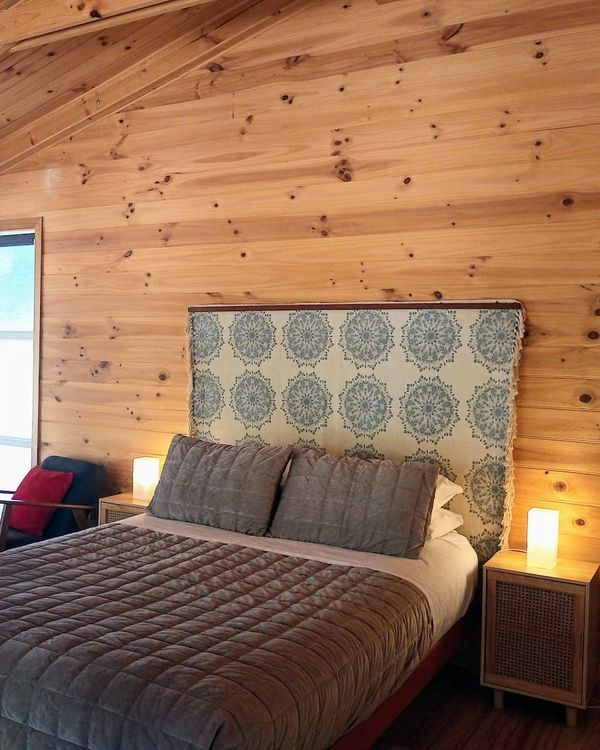
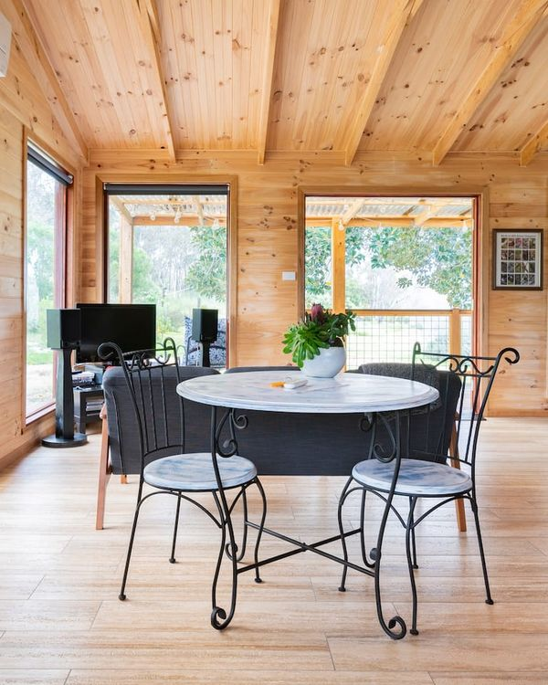
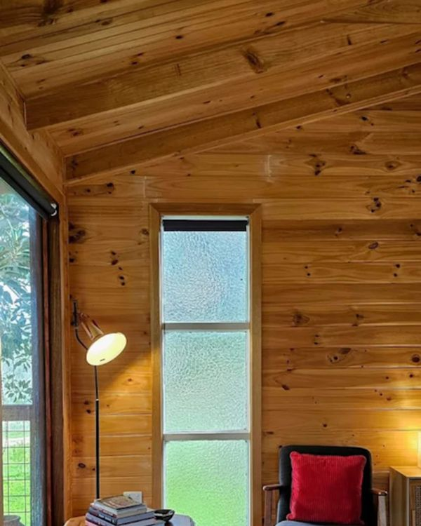
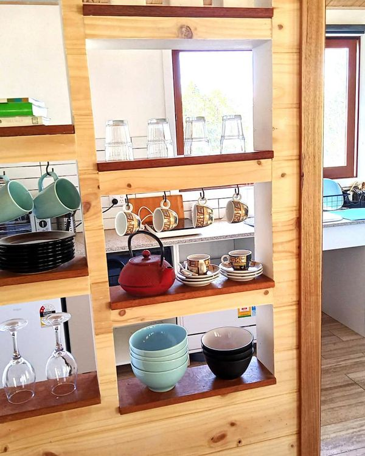
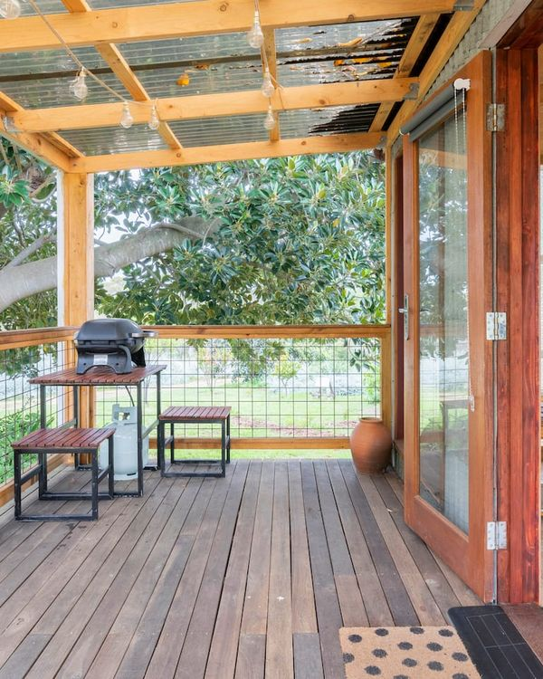
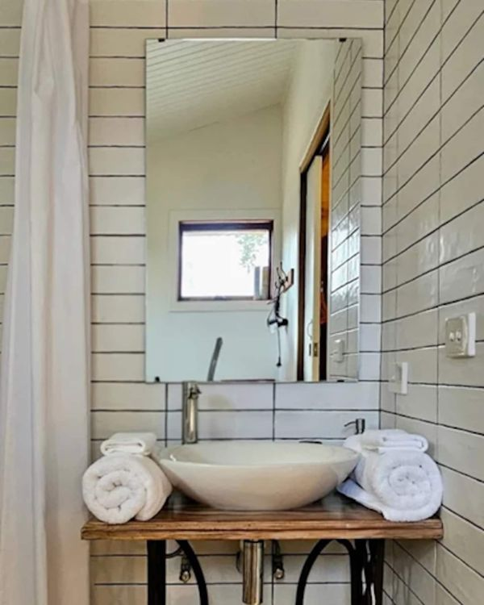
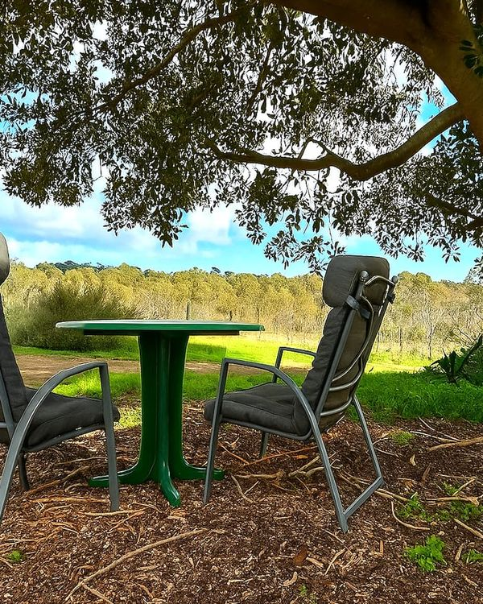
Rain is loud on an iron roof, and in summer the fig drops fruit on it. Earplugs are there for light sleepers.
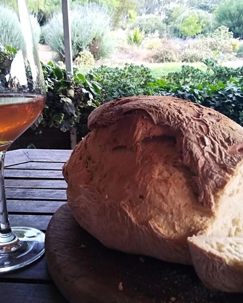
The bread
Breakfast supplies come with the stay, and many guests find Nelly's homemade bread or rolls waiting too.
"Great stay. Absolutely loved the bread"
Patrick, Airbnb, November 2026
"Nelly thinks of everything, we were even treated to warm homemade rolls on arrival."
Michele, Airbnb, October 2026
"We were particularly impressed with the home made focaccia."
Sarah, Airbnb, August 2026
The vineyard and the bush hill
Six acres of dry-grown vines, with no pesticides, herbicides or artificial fertilisers. Above them is a hill of native bush, where Nelly and Stan made paths and planted more native species.
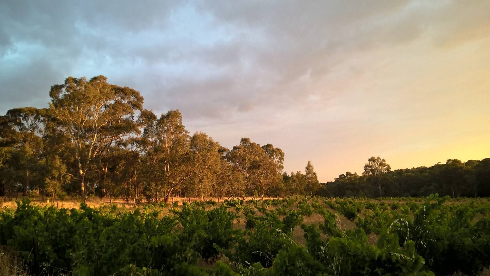
Six grape varieties, some on vines over 100 years old
Stan looks after the vines and makes wine for the family.
- Grenache, Semillon and Muscat of Alexandria, from vines more than a century old
- Saperavi, Mataro and Vermentino, planted later
A walking track runs along the back of the farm under old gums. It's about 20 minutes on foot to Williamstown's cafes and shops, and the neighbour's two alpacas often graze beside it.
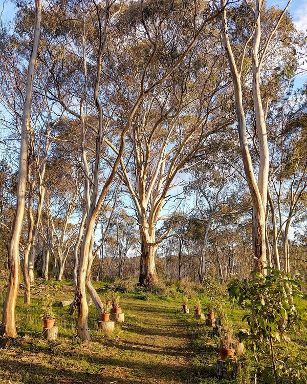
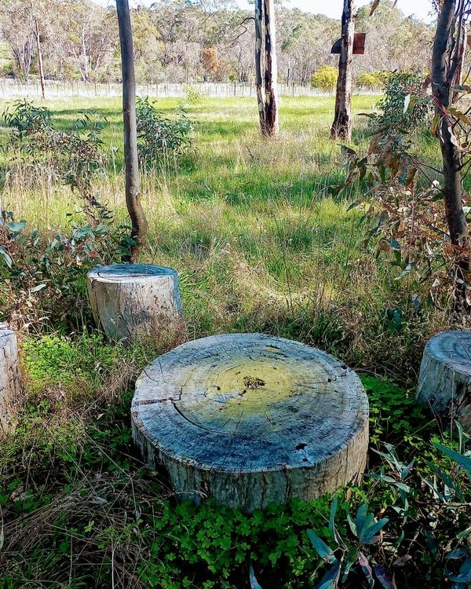
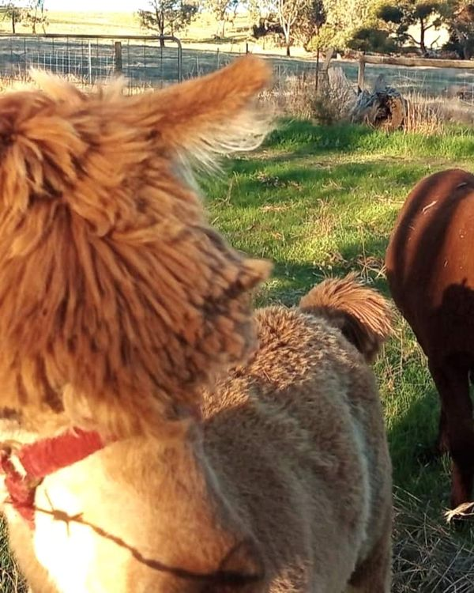
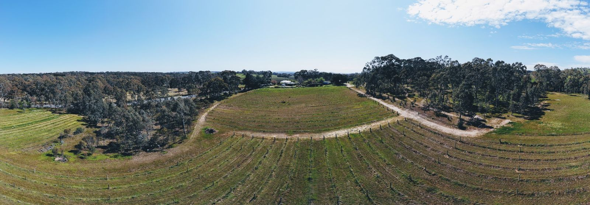
What guests say
4.92from 196 reviews on Airbnb, where it's a Guest favourite
"A cute little seclude cabin with beautiful scenery."
Tillie, Airbnb, November 2026
"Close to everything you would want for a great Barossa experience."
Marnie, Airbnb, September 2026
"Enjoyed our time surrounded by wildlife, even spotting a kangaroo!"
Delaney, Airbnb, August 2026
Getting here
In the southern Barossa, between Williamstown and Lyndoch, with the Adelaide Hills close by.
| From the cabin | Time |
|---|---|
| Williamstown | 15 min walk, 2 min drive |
| Lyndoch | 5 min drive |
| The rest of the Barossa and the Adelaide Hills | 20 to 30 min |
| Adelaide's beaches | 40 min |
Times as Nelly and Stan give them. The exact address comes with your booking.
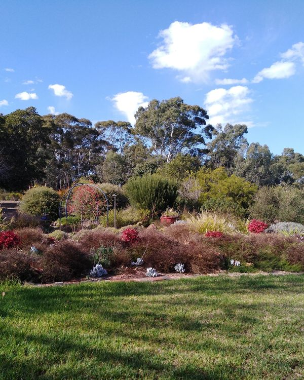
Check dates
Two nights at least, for two adults. Pick the site you already use.
- Heavy rain is audible on the iron roof. Earplugs are provided.
- Not for children who crawl or walk yet: it's a farm with an unfenced pond and bees.
- No fires, fire pits or smoking. No parties.
- Charging an electric car is A$12 a night on a standard power point. Bring your own cable and let Nelly know first.
Or write to Nelly
Ask about dates, the shower chair or anything to do with access before you book.
Email Nellybarossavineyard@gmail.com
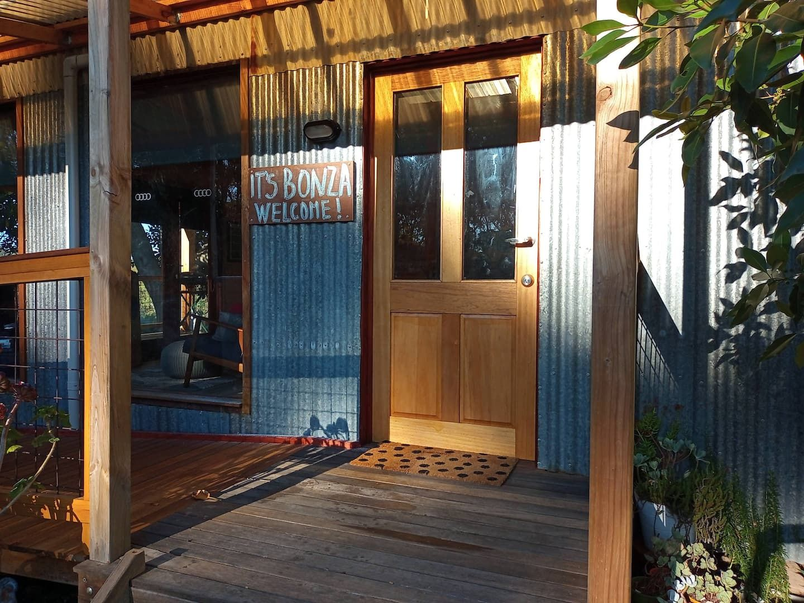
Look for the sign by the door.
It's Bonza! at Mill About Vineyard, Williamstown, in South Australia's Barossa Valley. Step-free from the parking bay to the shower.